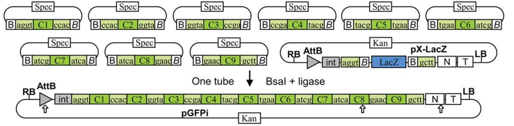

Golden Gate Assembly
GoldenGate frag1 frag2 frag3 BsaI product_name
GoldenGate frag1 frag2 frag3 BsaI product_name
BsaI GGTCTC(N)1 · CCAGAG(N)5 — the cut lands one base past the site on the top strand, five on the bottom
5’-ATGCCATAGCATTTTTATCCATAAGATTAGCGGATCtGAGACCccatg-3’ 3’-TACGGTATCGTAAAAATAGGTATTCTAATCGCCTAGaCTCTGGggtac-5’ 5’-cactgGGTCTCGGATCTTACCTGACGCTTTTTATCGCAACTCTCTAC-3’ 3’-gtgacCCAGAGCCTAGAATGGACTGCGAAAAATAGCGTTGAGAGATG-5’
5’-ATGCCATAGCATTTTTATCCATAAGATTAGCG-3’ 5’-GATCtGAGACCccatg-3’ 3’-TACGGTATCGTAAAAATAGGTATTCTAATCGCCTAG-5’ 3’-aCTCTGGggtac-5’ 5’-cactgGGTCTCG-3’ 5’-GATCTTACCTGACGCTTTTTATCGCAACTCTCTAC-3’ 3’-gtgacCCAGAGCCTAG-5’ 3’-AATGGACTGCGAAAAATAGCGTTGAGAGATG-5’
5’-ATGCCATAGCATTTTTATCCATAAGATTAGCGGATCTTACCTGACGCTTTTTATCGCAACTCTCTAC-3’ 3’-TACGGTATCGTAAAAATAGGTATTCTAATCGCCTAGAATGGACTGCGAAAAATAGCGTTGAGAGATG-5’
No BsaI site in the product — no scar. Then PCR with external oligos
5’-…ATGCCATAGCATTTTTATCCATAAGATTAGCGAGACCccatg-3’ 3’-…TACGGTATCGTAAAAATAGGTATTCTAATCGCTCTGGggtac-5’ 5’-cactgGGTCTCaTTAGTACcttACGCTTTTTATCGCAACTCTCTAC…-3’ 3’-gtgacCCAGAGtAATCATGgaaTGCGAAAAATAGCGTTGAGAGATG…-5’
5’-…ATGCCATAGCATTTTTATCCATAAGATTAGTACcttACGCTTTTTATCGCAACTCTCTAC…-3’ 3’-…TACGGTATCGTAAAAATAGGTATTCTAATCATGgaaTGCGAAAAATAGCGTTGAGAGATG…-5’
Design a Construction File to change the 5’ end of RFP in pBca9145-Bca1144 from atggcgagtagcgaagacg to atggctagtagcgaagacg without making additional mutations using BsaI EIPCR
One vector per bin, each has matching, unique 4bp overhangs:

5’-…ATGCCATAGCATTTTTATCCATAAGATTAGCGAGACCccatg-3’ 3’-…TACGGTATCGTAAAAATAGGTATTCTAATCGCTCTGGggtac-5’ 5’-cactgGGTCTCaTTAGTACcttACGCTTTTTATCGCAACTCTCTAC…-3’ 3’-gtgacCCAGAGtAATCATGgaaTGCGAAAAATAGCGTTGAGAGATG…-5’